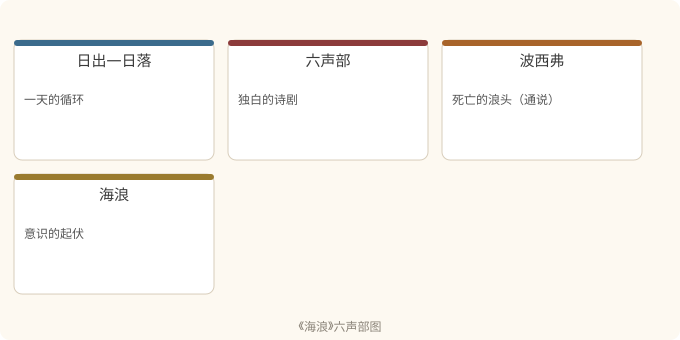

海浪
一、基本信息
| 作者 | 伍尔夫 |
|---|---|
| 成书/出版 | 1931年（作者页 B128 口径：海浪（1931）） Virginia Woolf — Encyclopaedia Britannica（百科全书） |
| 国别/地区 | 英国 |
| 时代 | 现当代 · 20世纪 |
| 体裁 | 长篇小说 |
| 语言 | 英语 |

《海浪》六声部图（主题·结构图）
二、创作背景
作者页（B128）：伍尔夫 major_works 载'海浪（1931）'（B128 作者页定位，详见 daluolaiwei 条核对）。
文体（通说待核）：六位人物的独白诗剧——从童年到老年的日升日落。
三、内容脉络
伯纳德、苏珊、 Jin、奈维尔、路易、罗达——六个声部（人物名通说待核）。
波西弗之死为转折（通说待核）。
四、主要人物表
| 人物 | 身份 | 说明 |
|---|---|---|
| 伯纳德 | 讲述者 | （通说待核） |
| 罗达 | 恐惧者 | （通说待核） |
五、主题与艺术特点
- 独白诗剧：'海浪'式意识（通说）。
- 死亡的浪头（通说待核）。
- 散文诗的极限（通说）。
六、影响与评论
- 作者页：伍尔夫最实验之作（B128 作者页口径）。
Virginia Woolf — Encyclopaedia Britannica（百科全书） - 被视为伍尔夫的杰作之巅（通说待核）。
Virginia Woolf — Encyclopaedia Britannica（百科全书）
七、阅读建议
难点
- 六声部独白。
- 散文诗节奏。
- 《海浪》（上海译文出版社曹元勇译本，通说待核）。
- 英文原版（公有领域渐近）。
伍尔夫实验之巅（先读《达洛维》）。
八、待核实
- 六位人物名（Bernard/Susan/Jin/Neville/Louis/Rhoda）核对。
- 1931年出版（Hogarth说）核对。
- 波西弗之死细节待核。